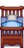

Gewinnkarte
| Gewinnkarte | |
| Gib dies dem Preisautomaten in Lewis' Haus, um eine besondere Belohnung zu erhalten. | |
| Information | |
| Quelle | Aufträge • Spezialaufträge • Eierfest und Fest des Eises Gewinne • Ende des Geisternacht Labyrinths • Sterntautaler Volksfest Preisbude |
| Verkaufspreis | |

Gewinnkarten werden durch das Abschließen von Aufträgen, Spezialaufträge, durch das Öffnen der Truhe am Ende des Labyrinths während der Geisternacht und durch wiederholtes gewinnen des Eierfestes und Fest des Eises verdient. Sie können auch auf dem Sterntautaler Volksfest für  1.000 gekauft werden. Eine Gewinnkarte befindet sich in einer Kiste hinter dem Baumstumpf über dem Buchhändler.
1.000 gekauft werden. Eine Gewinnkarte befindet sich in einer Kiste hinter dem Baumstumpf über dem Buchhändler.
Gewinnkarten können gegen Preise eingetauscht werden, indem man die Gewinnmaschine verwendet, die sich in Lewis' Haus neben dem Stadtbuch befindet. Beim Benutzen der Gewinnmaschine kann der Spieler sehen, wie viele Gewinnkarten er aktuell hat und welche drei Gewinne als nächstes vergeben werden. Durch das Einfordern eines Preises erhält der Spieler den ersten Preis in der Reihe und rückt die restlichen Preise um ein Feld vor.
Preise
Die möglichen Inhalte der ersten 22 Preise stehen fest. Bei Gewinnlistennummern mit mehreren möglichen Inhalten wird nur eine ausgewählt.[1]
| Prize List Number | Name | Description | Notes |
|---|---|---|---|
| 1 | Im Frühjahr pflanzen. Braucht 3 Tage zum Wachsen. | Erhaltbar zwischen Winter 21 und Frühling 23 | |
| Im Sommer pflanzen. Es dauert 6 Tage bis zur Reife und produziert auch nach der ersten Ernte weiter. | Erhaltbar zwischen Frühling 24 und Sommer 20 | ||
| Im Herbst pflanzen. Es dauert 8 Tage bis zur Reife und produziert auch nach der ersten Ernte weiter. | Erhaltbar zwischen Sommer 21 und Herbst 20 | ||
| Diese besondere Melone wächst im Winter. Es dauert 7 Tage bis zur Reife. | Erhaltbar zwischen Herbst 21 und Winter 20 | ||
| 2 | Wächst in 28 Tagen zu einem reifen Pfirsichbaum heran. Trägt im Sommer Früchte. Wächst nur, wenn die 8 umliegenden "Felder" leer sind. | Gewinn wird zufällig ausgewählt | |
| Wächst in 28 Tagen zu einem reifen Orangenbaum heran. Trägt im Sommer Früchte. Wächst nur, wenn die 8 umliegenden "Felder" leer sind. | |||
| 3 | Hier ist ein wenig von allem drin. Pflanze sie ein und lass dich überraschen! | Gewinn wird zufällig ausgewählt | |
| Ein Sortiment von Blumensamen. Pflanze sie ein und sieh, was wächst! | |||
| 4 | Ein Schmied kann das für dich öffnen. Wer weiß, was darin sein könnte? | ||
| 5 | Ein ganz besonderes Geschenk, über das sich jeder freuen würde. | ||
| 6 | Diese Möbel können nicht im Freien aufgestellt werden. | Wird vergeben wenn das Bauernhaus mindestens einmal aufgerüstet wurde | |
|  Blaues Nadelstreifenbett (1) | Diese Möbel können nicht im Freien aufgestellt werden. | Wird vergeben wenn das Bauernhaus nicht aufgerüstet wurde | |
| 7 | Bewässert jeden Morgen 8 Felder um sich herum. | Gewinn wird zufällig ausgewählt | |
| Macht aus Gemüse Eingelegtes und aus Früchten Marmelade. | |||
| Bringt immer wieder Pilze hervor. Je mehr wilde Bäume in der Nähe sind, desto besser funktioniert es. | |||
| 8 | Wächst in 28 Tagen zu einem reifen Apfelbaum heran. Trägt im Herbst Früchte. Wächst nur, wenn die 8 umliegenden "Felder" leer sind. | Gewinn wird zufällig ausgewählt | |
| Wächst in 28 Tagen zu einem reifen Granatapfelbaum heran. Trägt im Herbst Früchte. Wächst nur, wenn die 8 umliegenden "Felder" leer sind. | |||
| 9 | Du freundest dich etwas schneller mit Leuten an. | ||
| 10 | Löst eine kleine Explosion aus. Abstand halten! | Gewinn wird zufällig ausgewählt | |
| Löst eine Explosion aus. Pass auf! | |||
| Löst eine mächtige Explosion aus. Nur unter extremer Vorsicht benutzen. | |||
| 11 | Die Mütze ist mit einem alten Teamlogo versehen. | ||
| 12 | Platziere Fisch mit einem Stück Kohle, um geräucherten Fisch herzustellen. Geräucherter Fisch ist doppelt so viel wert. | Gewinn wird zufällig ausgewählt | |
| Platziere 5 Stück Obst oder essbare Pilze darin, um sie zu trocknen. | |||
| 13 | Ein Schmied kann dies für dich öffnen. Diese Funde enthalten oft alte Relikte und Kuriositäten. | Gewinn zufällig ausgewählt | |
| Ein Schmied kann das für dich öffnen. Wer weiß, was darin sein könnte? | |||
| 14 | Bringt deinem Haus oder deinem Hof ein wenig Persönlichkeit. | Eine von drei Varianten erhältlich | |
| 15 | Lesen, um Hofarbeiterfahrung zu sammeln. | Gewinn wird zufällig ausgewählt | |
| Lesen, um Angelerfahrung zu sammeln. | |||
| Lesen, um Bergbauerfahrung zu sammeln. | |||
| Lesen, um Kampferfahrung zu sammeln. | |||
| Lesen, um Sammelerfahrung zu sammeln. | |||
| 16 | Ein ganz besonderes Geschenk, über das sich jeder freuen würde. | ||
| 17 | Kann in deinem Haus platziert werden. | ||
| 18 | Ein Schmied kann sie dir aufbrechen. Diese Geoden enthalten alle möglichen Varianten von Mineralen. | ||
| 19 | Lege eine Frucht oder ein Gemüse hinein. Früher oder später wird daraus ein Getränk. | Gewinn wird zufällig ausgewählt | |
| Stelle es draußen auf und warte auf leckeren Honig - außer im Winter. | |||
| 20 | Ein seltener und wertvoller Edelstein. | ||
| 21 | Ein Schmied kann das für dich öffnen. Wer weiß, was darin sein könnte? | ||
| 22 | Ein seltenes und kraftvolles Bonbon, das mit der Essenz des prismatischen Splitters angereichert ist. |
Nach Erhalt des 22. Preises werden die weiteren gewonnenen Preise in der unten aufgeführten Reihenfolge verteilt. Als Beispiel wird Sternenfall-Tee als 23., 32., 41. und 50. Preis und danach alle 9 Preise vergeben. Bei Slots mit mehreren möglichen Inhalten wird nur einer ausgewählt.[1]
| Slot | Name | Description | Notes |
|---|---|---|---|
| 1 | Ein ganz besonderes Geschenk, über das sich jeder freuen würde. | ||
| 2 | Wow, sie ist voller Schätze! Die bringt sicher einen guten Preis. | ||
| 3 | Bewässert jeden Morgen 24 Felder um sich herum. | ||
| 4 | Kann in deinem Haus platziert werden. | Zufällig eine von drei Schicken Zimmerpflanzensorten, jeweils 25 % Gewinnchance | |
| Kann in deinem Haus platziert werden. | 25 % Gewinnchance | ||
| 5 | Löst eine Explosion aus. Pass auf! | Gewinn wird zufällig ausgewählt | |
| Löst eine mächtige Explosion aus. Nur unter extremer Vorsicht benutzen. | |||
| 6 | Ein Schmied kann das für dich öffnen. Wer weiß, was darin sein könnte? | ||
| 7 | Sprenkel auf Fässer, Öfen und andere Raffinerieausrüstung, damit sie ihr Produkt sofort erhalten. | Jede mögliche Menge Feenstaub, die vergeben wird, ist gleich wahrscheinlich | |
| 8 | Ein Barren aus purem Iridium. | Gewinn wird zufällig ausgewählt | |
| Er ist richtig scharf! Sei vorsichtig. | |||
| Er ist stärker als normaler Kaffee! | |||
| Krabbe, Brotkrümel und Eier, die zu einer Frikadelle geformt und dann goldbraun gebraten werden. | |||
| Ein Schmied kann dies für dich öffnen. Diese Funde enthalten oft alte Relikte und Kuriositäten. | |||
| 9 | Bringt deinem Haus oder deinem Hof ein wenig Persönlichkeit. | Eine von drei Varianten erhältlich |
Geschenke
Gewinnkarten dürfen nicht als Geschenke an Dorfbewohner weitergegeben werden.
Bündel
Für den  Helferlein Bündel am Schwarzen Brett (Remixed) ist ein Gewinnlos erforderlich.
Helferlein Bündel am Schwarzen Brett (Remixed) ist ein Gewinnlos erforderlich.
Schneidern
Gewinnkarten werden nicht in der Schneiderei verwendet. Es kann in der Färberei verwendet werden, und dient als roter Farbstoff in den Färbetöpfen in Emily's and Haley's Haus, Weidengasse 2.
Aufträge
Gewinnkarten werden nicht in Aufträge.